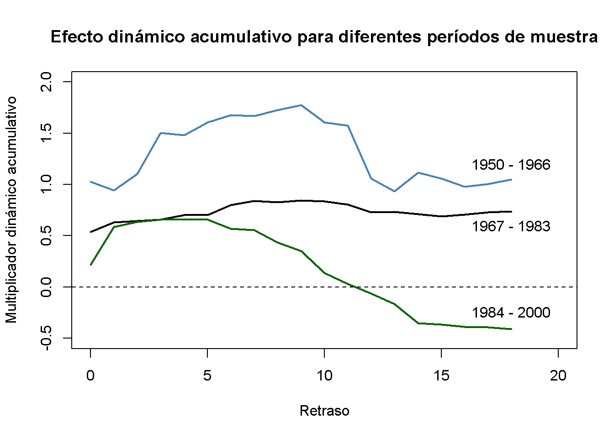

16.6 Precios del jugo de naranja y clima frío
Esta sección investiga las dos preguntas siguientes utilizando los métodos de regresión de series de tiempo que se analizan aquí:
¿Qué tan persistente es el efecto de una sola congelación en los precios del concentrado de jugo de naranja?
¿El efecto se ha mantenido estable durante todo el período de tiempo?
Se comienza estimando los efectos causales dinámicos con un modelo de rezagos distribuidos donde \(\%ChgOJC_t\) se regresa en \(FDD_t\) y 18 rezagos. Una segunda especificación del modelo considera una transformación del modelo de rezago distribuido que permite estimar los 19 multiplicadores dinámicos acumulativos utilizando MCO. El tercer modelo, agrega 11 variables binarias (una para cada uno de los meses de febrero a diciembre) para ajustar un posible sesgo de variable omitida que surge de la correlación de \(FDD_t\) y temporadas agregando season(FDD) al lado derecho de la mano de la fórmula del segundo modelo.
# estimar modelos de retardo distribuido de cambios en el precio del jugo de naranja congelado
FOJC_mod_DM <- dynlm(FOJC_pctc ~ L(FDD, 0:18))
FOJC_mod_CM1 <- dynlm(FOJC_pctc ~ L(d(FDD), 0:17) + L(FDD, 18))
FOJC_mod_CM2 <- dynlm(FOJC_pctc ~ L(d(FDD), 0:17) + L(FDD, 18) + season(FDD))Los modelos anteriores incluyen una gran cantidad de retrasos con etiquetas predeterminadas que se corresponden con el grado de diferenciación y los órdenes de retraso, lo que dificulta la lectura del resultado. Las etiquetas de regresor de un objeto modelo se pueden alterar anulando el atributo names de la sección de coeficientes usando la función attr(). Por lo tanto, para una mejor legibilidad, se utilizan las órdenes de retraso como etiquetas regresivas.
# establecer órdenes de retraso como etiquetas regresivas
attr(FOJC_mod_DM$coefficients, "names")[1:20] <- c("(Intercept)", as.character(0:18))
attr(FOJC_mod_CM1$coefficients, "names")[1:20] <- c("(Intercept)", as.character(0:18))
attr(FOJC_mod_CM2$coefficients, "names")[1:20] <- c("(Intercept)", as.character(0:18))A continuación, se calculan los errores estándar de HAC para cada modelo usando NeweyWest() y se recopilan los resultados en una lista que luego se suministra como el argumento se a la función stargazer(), observe abajo. La muestra consta de 612 observaciones:
length(FDD)
#> [1] 612De acuerdo con (16.6), la regla general para elegir el parámetro de truncamiento \(m\) del error estándar HAC, se elige
\[m = \left\lceil0.75 \cdot 612^{1/3} \right\rceil = \lceil6.37\rceil = 7.\]
Para comprobar la sensibilidad de los errores estándar a las diferentes opciones del parámetro de truncamiento en el modelo que se utiliza para estimar los multiplicadores acumulativos, también se calcula el estimador de Newey-West para \(m = 14\).
# recopilar errores estándar de HAC en una lista
SEs <- list(sqrt(diag(NeweyWest(FOJC_mod_DM, lag = 7, prewhite = F))),
sqrt(diag(NeweyWest(FOJC_mod_CM1, lag = 7, prewhite = F))),
sqrt(diag(NeweyWest(FOJC_mod_CM1, lag = 14, prewhite = F))),
sqrt(diag(NeweyWest(FOJC_mod_CM2, lag = 7, prewhite = F))))Luego, los resultados se utilizan para producir la siguiente tabla:
stargazer(FOJC_mod_DM , FOJC_mod_CM1, FOJC_mod_CM1, FOJC_mod_CM2,
title = "Efectos dinámicos de un día de grados de congelación en el precio del jugo de naranja",
header = FALSE,
digits = 3,
column.labels = c("Multiplicadores dinámicos", rep("Multiplicadores acumulativos dinámicos", 3)),
dep.var.caption = "Variable dependiente: Cambio porcentual mensual en el precio del jugo de naranja",
dep.var.labels.include = FALSE,
covariate.labels = as.character(0:18),
omit = "season",
se = SEs,
no.space = T,
add.lines = list(c("¿Indicadores mensuales?","no", "no", "no", "yes"),
c("Truncamiento de HAC","7", "7", "14", "7")),
omit.stat = c("rsq", "f","ser")) | Variable dependiente: Cambio porcentual mensual en el precio del jugo de naranja | ||||
| Multiplicadores dinámicos | Multiplicadores acumulativos dinámicos | Multiplicadores acumulativos dinámicos | Multiplicadores acumulativos dinámicos | |
| (1) | (2) | (3) | (4) | |
| 0 | 0.508*** | 0.508*** | 0.508*** | 0.524*** |
| (0.137) | (0.137) | (0.139) | (0.142) | |
| 1 | 0.172** | 0.680*** | 0.680*** | 0.720*** |
| (0.088) | (0.134) | (0.130) | (0.142) | |
| 2 | 0.068 | 0.748*** | 0.748*** | 0.781*** |
| (0.060) | (0.165) | (0.162) | (0.173) | |
| 3 | 0.070 | 0.819*** | 0.819*** | 0.861*** |
| (0.044) | (0.181) | (0.181) | (0.190) | |
| 4 | 0.022 | 0.841*** | 0.841*** | 0.892*** |
| (0.031) | (0.183) | (0.184) | (0.194) | |
| 5 | 0.027 | 0.868*** | 0.868*** | 0.904*** |
| (0.030) | (0.189) | (0.189) | (0.199) | |
| 6 | 0.031 | 0.900*** | 0.900*** | 0.922*** |
| (0.047) | (0.202) | (0.208) | (0.210) | |
| 7 | 0.015 | 0.915*** | 0.915*** | 0.939*** |
| (0.015) | (0.205) | (0.210) | (0.212) | |
| 8 | -0.042 | 0.873*** | 0.873*** | 0.904*** |
| (0.034) | (0.214) | (0.218) | (0.219) | |
| 9 | -0.010 | 0.862*** | 0.862*** | 0.884*** |
| (0.051) | (0.236) | (0.245) | (0.239) | |
| 10 | -0.116* | 0.746*** | 0.746*** | 0.752*** |
| (0.069) | (0.257) | (0.262) | (0.259) | |
| 11 | -0.067 | 0.680** | 0.680** | 0.677** |
| (0.052) | (0.266) | (0.272) | (0.267) | |
| 12 | -0.143* | 0.537** | 0.537** | 0.551** |
| (0.076) | (0.268) | (0.271) | (0.272) | |
| 13 | -0.083* | 0.454* | 0.454* | 0.491* |
| (0.043) | (0.267) | (0.273) | (0.275) | |
| 14 | -0.057 | 0.397 | 0.397 | 0.427 |
| (0.035) | (0.273) | (0.284) | (0.278) | |
| 15 | -0.032 | 0.366 | 0.366 | 0.406 |
| (0.028) | (0.276) | (0.287) | (0.280) | |
| 16 | -0.005 | 0.360 | 0.360 | 0.408 |
| (0.055) | (0.283) | (0.293) | (0.286) | |
| 17 | 0.003 | 0.363 | 0.363 | 0.395 |
| (0.018) | (0.287) | (0.294) | (0.290) | |
| 18 | 0.003 | 0.366 | 0.366 | 0.386 |
| (0.017) | (0.293) | (0.301) | (0.295) | |
| Constant | -0.343 | -0.343 | -0.343 | -0.241 |
| (0.269) | (0.269) | (0.256) | (0.934) | |
| ¿Indicadores mensuales? | no | no | no | yes |
| Truncamiento de HAC | 7 | 7 | 14 | 7 |
| Observations | 594 | 594 | 594 | 594 |
| Adjusted R2 | 0.109 | 0.109 | 0.109 | 0.101 |
| Note: | *p<0.1; **p<0.05; ***p<0.01 | |||
Table 16.1: Efectos dinámicos de un día de grados de congelación en el precio del jugo de naranja
Según la columna (1) de la Tabla 16.1, el efecto contemporáneo de un día de grado de congelación es un aumento de \(0.5\%\) en los precios del jugo de naranja. El efecto estimado es de solo \(0.17\%\) para el próximo mes y cercano a cero para los meses siguientes. De hecho, para todos los rezagos mayores que 1, no se puede rechazar la hipótesis nula de que los coeficientes respectivos son cero usando pruebas de \(t\) individuales. El modelo FOJC_mod_DM solo explica poco de la variación en la variable dependiente (\(\bar{R}^2 = 0.11\)).
Las columnas (2) y (3) presentan estimaciones de los multiplicadores acumulativos dinámicos del modelo FOJC_mod_CM1. Aparentemente, no importa si se elige \(m = 7\) o \(m = 14\) al calcular los errores estándar de HAC, por lo que se queda con \(m = 7\) y los errores estándar informados en la columna (2).
Si la demanda de jugo de naranja es mayor en invierno, \(FDD_t\) estaría correlacionado con el término de error, ya que las heladas ocurren más bien en invierno, por lo que se enfrentaría un sesgo de variable omitido. La estimación del tercer modelo, FOJC_mod_CM2, tiene en cuenta este posible problema mediante el uso de un conjunto adicional de 11 variables ficticias mensuales. Por brevedad, las estimaciones de los coeficientes ficticios se excluyen de la salida producida por Stargazer (esto se logra estableciendo omit = ‘season’). Se puede comprobar que se omitió la variable ficticia de enero para evitar una multicolinealidad perfecta.
# estimaciones sobre variables ficticias mensuales
FOJC_mod_CM2$coefficients[-c(1:20)]
#> season(FDD)Feb season(FDD)Mar season(FDD)Apr season(FDD)May season(FDD)Jun
#> -0.9565759 -0.6358007 0.5006770 -1.0801764 0.3195624
#> season(FDD)Jul season(FDD)Aug season(FDD)Sep season(FDD)Oct season(FDD)Nov
#> 0.1951113 0.3644312 -0.4130969 -0.1566622 0.3116534
#> season(FDD)Dec
#> 0.1481589Una comparación de las estimaciones presentadas en las columnas (3) y (4) indica que la adición de variables ficticias mensuales tiene un efecto insignificante. Otra evidencia de esto proviene de una prueba conjunta de la hipótesis de que los 11 coeficientes ficticios son cero. En lugar de usar linearHypothesis(), se usa la función waldtest() y se proporcionan dos objetos de modelo en su lugar: unres_model, el objeto de modelo sin restricciones que es lo mismo que FOJC_mod_CM2 (excepto por los nombres de los coeficientes, ya que se han modificado arriba) y res_model, el modelo donde se impone la restricción de que todos los coeficientes ficticios son cero. res_model se obtiene convenientemente usando la función update(). Extrae el argumento formula de un objeto modelo, lo actualiza según lo especificado y luego vuelve a ajustar el modelo. Estableciendo formula = . ~ . - season(FDD) se impone que los maniquíes mensuales no ingresen al modelo.
# probar si los coeficientes de las variables ficticias mensuales son cero
unres_model <- dynlm(FOJC_pctc ~ L(d(FDD), 0:17) + L(FDD, 18) + season(FDD))
res_model <- update(unres_model, formula = . ~ . - season(FDD))
waldtest(unres_model,
res_model,
vcov = NeweyWest(unres_model, lag = 7, prewhite = F))
#> Wald test
#>
#> Model 1: FOJC_pctc ~ L(d(FDD), 0:17) + L(FDD, 18) + season(FDD)
#> Model 2: FOJC_pctc ~ L(d(FDD), 0:17) + L(FDD, 18)
#> Res.Df Df F Pr(>F)
#> 1 563
#> 2 574 -11 0.9683 0.4743El valor de \(p\) es \(0.47\), por lo que no se puede rechazar la hipótesis de que los coeficientes de las variables ficticias mensuales son cero, incluso en el nivel de \(10\%\). Se concluye que las fluctuaciones estacionales en la demanda de jugo de naranja no representan una amenaza seria para la validez interna del modelo.
Es conveniente utilizar gráficos de multiplicadores dinámicos y multiplicadores dinámicos acumulativos. Los siguientes dos fragmentos de código reproducen gráficas que muestran estimaciones puntuales de multiplicadores dinámicos y acumulativos junto con los límites superior e inferior de sus intervalos de confianza de \(95\%\) calculados utilizando los errores estándar de HAC anteriores.
# límites de IC del 95%
point_estimates <- FOJC_mod_DM$coefficients
CI_bounds <- cbind("lower" = point_estimates - 1.96 * SEs[[1]],
"upper" = point_estimates + 1.96 * SEs[[1]])[-1, ]
# graficar los multiplicadores dinámicos estimados
plot(0:18, point_estimates[-1],
type = "l",
lwd = 2,
col = "steelblue",
ylim = c(-0.4, 1),
xlab = "Retraso",
ylab = "Multiplicador dinámico",
main = "Efecto dinámico de FDD en el precio del jugo de naranja")
# agregar una línea discontinua en 0
abline(h = 0, lty = 2)
# agregar límites de CI
lines(0:18, CI_bounds[,1], col = "darkred")
lines(0:18, CI_bounds[,2], col = "darkred")Figure 16.1: Multiplicadores Dinámicos
Los intervalos de confianza de \(95\%\) graficados en la Figura ?? de hecho incluyen cero para retrasos mayores que 1, de modo que el nulo de un multiplicador cero no puede rechazarse para estos retrasos.
# límites de IC del 95%
point_estimates <- FOJC_mod_CM1$coefficients
CI_bounds <- cbind("lower" = point_estimates - 1.96 * SEs[[2]],
"upper" = point_estimates + 1.96 * SEs[[2]])[-1,]
# graficar multiplicadores dinámicos estimados
plot(0:18, point_estimates[-1],
type = "l",
lwd = 2,
col = "steelblue",
ylim = c(-0.4, 1.6),
xlab = "Retraso",
ylab = "Multiplicador dinámico acumulativo",
main = "Efecto dinámico acumulativo de FDD en el precio del jugo de naranja")
# agregar línea discontinua en 0
abline(h = 0, lty = 2)
# agregar límites de CI
lines(0:18, CI_bounds[, 1], col = "darkred")
lines(0:18, CI_bounds[, 2], col = "darkred")Figure 16.2: Multiplicadores Acumulativos Dinámicos
Como se puede ver en la Figura ??, los multiplicadores acumulativos dinámicos estimados crecen hasta el séptimo mes cuando ocurre un aumento del precio de aproximadamente \(0.91\%\) y luego disminuyen ligeramente hasta el multiplicador acumulativo estimado a largo plazo de \(0.37\%\) que, sin embargo, no es significativamente diferente de cero en el nivel de \(5\%\).
¿Los multiplicadores dinámicos se han mantenido estables en el tiempo? Una forma de ver esto es estimar estos multiplicadores para diferentes subperíodos del intervalo muestral. Por ejemplo, considere los períodos 1950-1966, 1967-1983 y 1984-2000. Si los multiplicadores son los mismos para los tres períodos, las estimaciones deben ser cercanas y, por lo tanto, los multiplicadores acumulativos estimados también deben ser similares. Se investiga esto volviendo a estimar FOJC_mod_CM1 para los tres períodos de tiempo diferentes y luego se grafican los multiplicadores dinámicos acumulativos estimados para la comparación.
# estimar multiplicadores acumulativos usando diferentes períodos de muestra
FOJC_mod_CM1950 <- update(FOJC_mod_CM1, start = c(1950, 1), end = c(1966, 12))
FOJC_mod_CM1967 <- update(FOJC_mod_CM1, start = c(1967, 1), end = c(1983, 12))
FOJC_mod_CM1984 <- update(FOJC_mod_CM1, start = c(1984, 1), end = c(2000, 12))# graficar multiplicadores acumulativos dinámicos estimados (1950-1966)
plot(0:18, FOJC_mod_CM1950$coefficients[-1],
type = "l",
lwd = 2,
col = "steelblue",
xlim = c(0, 20),
ylim = c(-0.5, 2),
xlab = "Retraso",
ylab = "Multiplicador dinámico acumulativo",
main = "Efecto dinámico acumulativo para diferentes períodos de muestra")
# graficar multiplicadores dinámicos estimados (1967-1983)
lines(0:18, FOJC_mod_CM1967$coefficients[-1], lwd = 2)
# graficar multiplicadores dinámicos estimados (1984-2000)
lines(0:18, FOJC_mod_CM1984$coefficients[-1], lwd = 2, col = "darkgreen")
# agregar línea discontinua en 0
abline(h = 0, lty = 2)
# agregar anotaciones
text(18, -0.24, "1984 - 2000")
text(18, 0.6, "1967 - 1983")
text(18, 1.2, "1950 - 1966")
Claramente, los multiplicadores dinámicos acumulativos han cambiado considerablemente con el tiempo. El efecto de una congelación fue más fuerte y persistente en las décadas de 1950 y 1960. Para la década de 1970, la magnitud del efecto fue menor pero aún muy persistente. Se observa una magnitud aún menor para el tercio final del intervalo de la muestra (1984 - 2000), donde el efecto a largo plazo es mucho menos persistente y esencialmente cero después de un año.
Una prueba QLR para una ruptura en la regresión de retardo distribuido de la columna (1) en la Tabla 16.1 con un recorte de \(15\%\) utilizando una estimación de matriz de varianza-covarianza de HAC respalda la conjetura de que los coeficientes de regresión de la población han cambiado tiempo extraordinario.
# configurar un rango de posibles fechas de descanso
tau <- c(window(time(FDD),
time(FDD)[round(612/100*15)],
time(FDD)[round(612/100*85)]))
# inicializar el vector de estadísticos F
Fstats <- numeric(length(tau))
# el modelo restringido
res_model <- dynlm(FOJC_pctc ~ L(FDD, 0:18))
# estimación, repetir las fechas de descanso
for(i in 1:length(tau)) {
# configurar variable ficticia
D <- time(FOJC_pctc) > tau[i]
# estimar el modelo DL con interacciones
unres_model <- dynlm(FOJC_pctc ~ D * L(FDD, 0:18))
# calcular y guardar el estadístico F
Fstats[i] <- waldtest(res_model,
unres_model,
vcov = NeweyWest(unres_model, lag = 7, prewhite = F))$F[2]
}Se debe tener en cuenta que este código tarda un par de segundos en ejecutarse, ya que se estima un total de regresiones de length(tau) con coeficientes de modelo de \(40\) cada una.
# estadístico de prueba de QLR
max(Fstats)
#> [1] 36.76819El estadístico QLR es round(max(Fstats),2). Se puede observar que el valor crítico \(1\%\) para la prueba QLR con recorte del \(15\%\) y \(q = 20\) restricciones es \(2.43\). Dado que esta es una prueba del lado derecho, el estadístico QLR se encuentra claramente en la región de rechazo, por lo que se puede descartar la hipótesis nula de no ruptura en la función de regresión de la población.
Se recomienda buscar ejemplos empíricos donde se cuestione si el supuesto de exogeneidad (pasada y presente) de los regresores es plausible.
Resumen
Se ha visto cómo R puede usarse para estimar la trayectoria temporal del efecto en \(Y\) de un cambio en \(X\) (el efecto causal dinámico en \(Y\) de un cambio en \(X\)) usando datos de series de tiempo en ambos. El modelo correspondiente se llama modelo de rezago distribuido. Los modelos de retraso distribuidos se estiman convenientemente usando la función dynlm() del paquete dynlm.
El error de regresión en los modelos de rezagos distribuidos a menudo se correlaciona en serie de modo que los errores estándar que son robustos a la heterocedasticidad y autocorrelación deben usarse para obtener una inferencia válida. El paquete sandwich proporciona funciones para el cálculo de los denominados estimadores de matriz de covarianza HAC, por ejemplo vcovHAC() y NeweyWest().
Cuando \(X\) es estrictamente exógeno, se pueden obtener estimaciones más eficientes utilizando un modelo ADL o mediante la estimación MCG. Se pueden encontrar algoritmos MCG viables en los paquetes orcutt y nlme de R. Se debe enfatizar que el supuesto de exogeneidad estricta es a menudo inverosímil en aplicaciones empíricas.